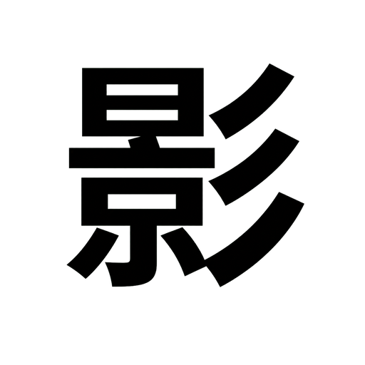

读懂项目
理解现有代码、目录结构与项目上下文，快速定位关键实现。

如影 Code长城汽车内部研发工具
理解项目上下文，协助修改、运行与验证代码，让研发协作更专注、更顺畅。
支持 macOS Apple Silicon 与 Windows x64
产品能力
理解现有代码、目录结构与项目上下文，快速定位关键实现。
协助修改、运行与验证代码，让每一次变更都有清晰依据。
使用企业内部身份安全登录，快速进入专属研发环境。
下载安装
系统识别只用于推荐，你可以随时下载任一平台版本。
macOS
适用于搭载 Apple 芯片的 Mac，安装包格式为 DMG。
下载 macOS 版Windows
适用于 64 位 Windows 设备，安装包格式为 EXE。
下载 Windows 版安装说明
当前安装包未签名，首次打开时系统可能显示安全提示。